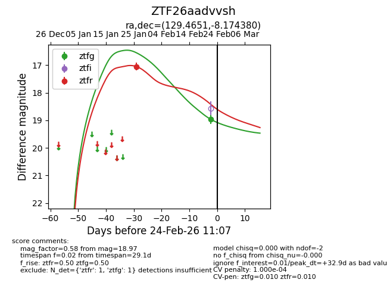
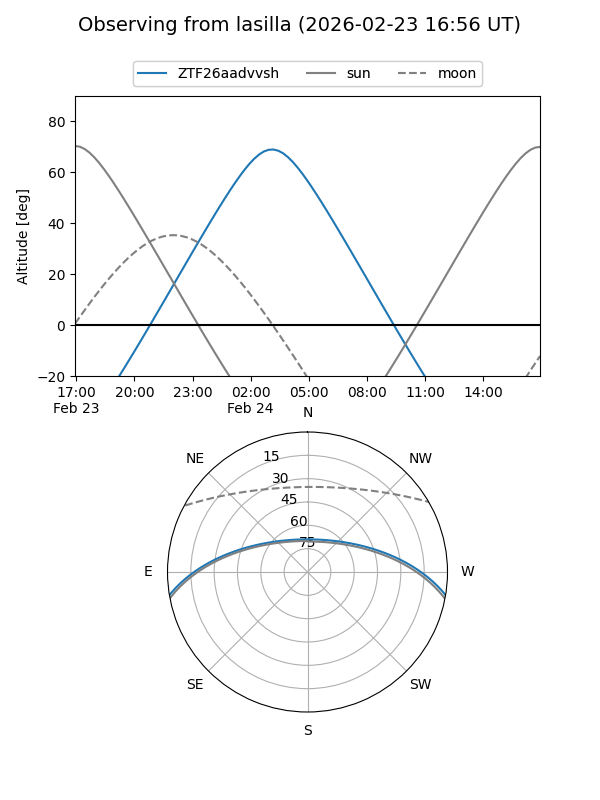
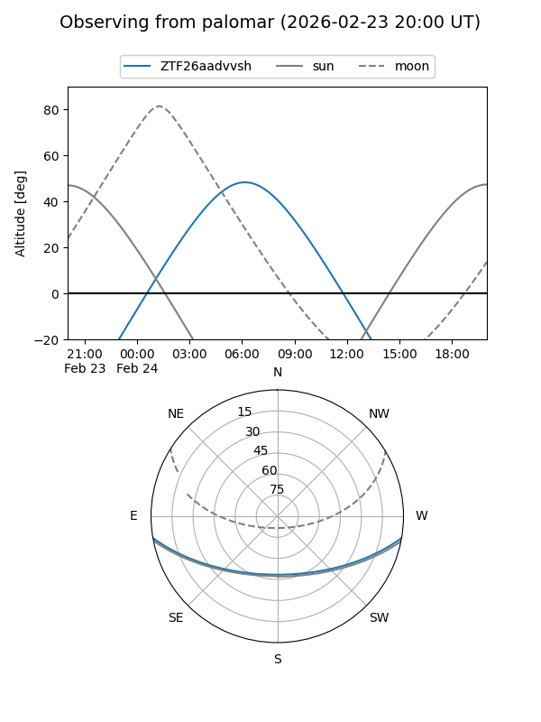
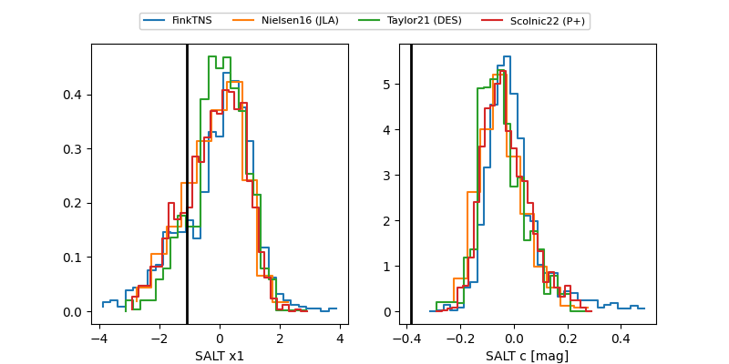

ZTF26aadvvsh
Target ZTF26aadvvsh at 2026-02-24 11:09
Aliases and brokers:
FINK: link
Lasair: link
ALeRCE: link
alt names
ZTF26aadvvsh (ztf,fink_ztf)
Coordinates:
equatorial (ra, dec) = 129.4651,-8.17438
equatorial (HMS+DMS) = 08:37:51.62,-08:10:27.77
galactic (l, b) = (233.3059,+19.25020)
Flags:
likely cv
Photometry:
last ztfg=18.97, ztfr=17.05
1 ztfg, 1 ztfr detections
Lightcurve

Visibility


Additional plots
